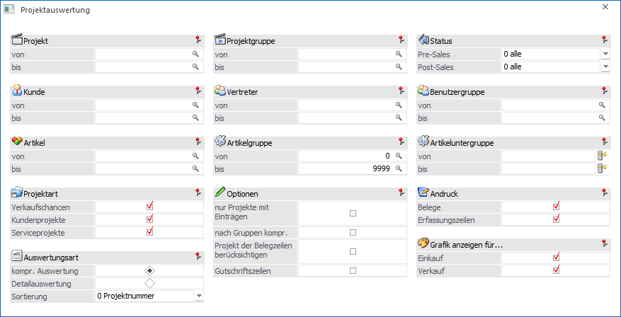
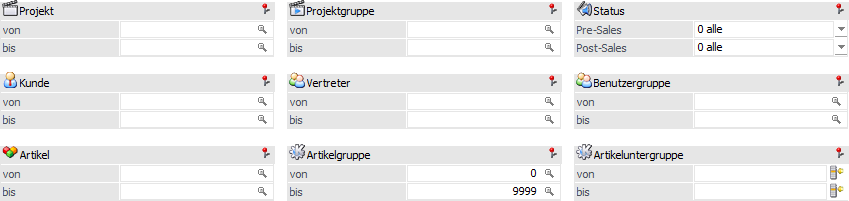
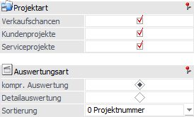
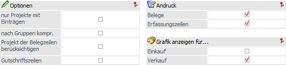
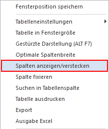
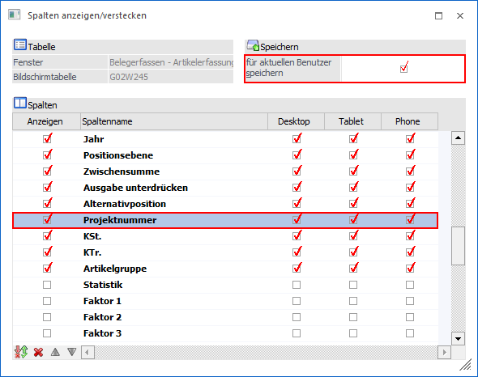

Über die Projektauswertung kann der Status eines Projekts detailliert oder auch komprimiert mit einer Grafik ausgewertet werden. Die Auswertung wird hierbei über den Menüpunkt…
1 WinLine FAKT
1 Auswertungen
1 Projektauswertungen
1 Projektauswertung
… geöffnet.

Die Auswertung kann nach den folgenden Kriterien eingeschränkt werden, bzw. es stehen folgende Einstellungen zur Verfügung:
Selektion

Ø Projekt
An dieser Stelle kann die Einschränkung auf das Projekt erfolgen.
Ø Projektgruppe
Hier kann eine Einschränkung der Projekte auf Projektgruppenbasis vorgenommen werden. Über die Matchcodefunktion kann nach allen Projektgruppen gesucht werden.
Ø Status (Pre-Sales / Post-Sales)
Bei der Auswahl "0 - alle" werden alle Projekte unabhängig vom Status angezeigt. Bei der Auswahl eines bestimmten Status werden nur Projekte angezeigt, deren letzter Status gleich der Auswahl ist. So können z.B. alle Projekte ausgewertet werden, welche zurzeit auf "Termin vereinbaren" stehen.
Ø Kunde
Hier erfolgt die Einschränkung auf den Kunden, dessen Projekte angezeigt werden sollen.
Ø Vertreter
Mit Hilfe dieser Felder kann eine Einschränkung auf den Vertreter vorgenommen werden
Achtung
Hier wird nach WEB-Benutzern gesucht die einen Vertreter zugeordnet haben.
Ø Benutzergruppen
An dieser Stelle kann die Einschränkung auf eine bestimmte Benutzergruppe (Web-Gruppen) erfolgen.
Ø Artikel
Es werden nur jene Projekte angezeigt, in denen der selektierte Artikel vorkommt.
Ø Artikelgruppe
Es werden nur jene Projekte angezeigt, in denen die selektierte Artikelgruppe vorkommt.
Ø Artikeluntergruppe
Es werden nur jene Projekte angezeigt, in denen die eingegebene Artikeluntergruppe vorkommt.
Ausgabe

Ø Projektart
Mit Hilfe von Checkboxen kann definiert werden, was für Projektarten bei der Auswertung berücksichtigt werden sollen. Es stehen die folgenden Varianten zur Verfügung:
ü Verkaufschancen
ü Kundenprojekte
ü Serviceprojekte
Ø Auswertungsart
Die Auswertung kann wahlweise komprimiert oder detailliert ausgegeben werden (diese Einstellung wird benutzerspezifisch gespeichert).
ü Komprimierte Auswertung
Es wird
für jedes Projekt der aktuelle Status (Pre- und Post-Sales), die Summe der
Budget- und Istwerte in Zahlen, inklusive einer Grafik, dargestellt.
ü Detailauswertung
Es wird für
jedes Projekt eine detaillierte Auswertung der Budget- und Istwerte ausgegeben.
Zusätzlich werden alle erfassten Pre- und Post-Sales-Stati auf der Auswertung
aufgeführt.
Ø Sortierung
Die Sortierung der Projekte kann nach den folgenden Kriterien erfolgen:
ü 0 - Projektnummer
ü 1 - Status Pre-Sales
ü 2 - Status Post-Sales
Weitere Optionen

Ø nur Projekte mit Einträgen
Die Option "nur Projekte mit Einträgen" steht bei der komprimierten Auswertung zur Verfügung. Mit Hilfe dieser werden nur mehr Projekte angezeigt, für welche es Einträge im Projektjournal oder in Belegen gibt.
Beispiel
Es sollen nur jene Projekte angezeigt werden, in denen ein bestimmter Artikel vorkommt. In diesem Fall schränkt man auf diesen Artikel ein und aktiviert die Option "nur Projekte mit Einträgen". Hierdurch werden die Projekte ohne Einträge nicht angezeigt und von jenen mit Einträgen nur die, bei denen der angegebene Artikel erfasst wurde.
Ø nach Gruppen kompr.
Mit Hilfe der Option "nach Gruppen kompr." werden alle Projekte anhand deren Projektgruppen zusammengefasst. Diese Funktion steht nur zur Verfügung, wenn die komprimierte Ausgabevariante gewählt wurde.
Ø Projekt der Belegzeilen berücksichtigen
Wenn diese Option aktiviert ist, dann wird die Projektnummer aus den Belegzeilen (Mittelteilszeilen) berücksichtigt.
Ø Gutschriftszeilen
Durch Aktivieren der Option "Gutschriftszeilen" werden auch Belegzeilen ausgegeben, welche mit dem Zeilentyp "6 - Gutschrift" erfasst wurden.
Ø Andruck
Hier kann gesteuert werden, ob die Belege und / oder die Erfassungszeilen ebenfalls ausgewertet werden sollen. Diese Einstellung bestimmt auch den Umfang der Auswertung. Wenn beide Optionen aktiviert sind, werden für jedes Projekt die zugehörigen Belege und Projekterfassungszeilen angedruckt. Wenn nur die Option "Belege" aktiviert ist, so werden für jedes Projekt nur die zugehörigen Belege angedruckt. Wenn nur die Option "Erfassungszeilen" aktiviert ist, so werden für jedes Projekt nur die Projekterfassungszeilen angedruckt.
Ø Grafik anzeigen für…
Durch Aktivieren der Checkboxen (mindestens eine Option muss gesetzt sein und wird benutzerspezifisch gespeichert) kann festgelegt werden, ob bei Ausgabe der komprimierten Auswertung die angezeigte Grafik für Einkaufs- und / oder Verkaufswerte erfolgen soll.
Hinweis
Wurde unter "Andruck" keine Option aktiviert, so wird auch keine Grafik ausgegeben.
Buttons

Ø Ausgabe Bildschirm
Mit Hilfe des Buttons "Ausgabe Bildschirm" oder der Taste F5 wird die Auswertung am Bildschirm ausgegeben.
Ø Ausgabe Drucker
Durch Anwahl des Buttons "Ausgabe Drucker" wird die Auswertung am Drucker ausgegeben.
Ø Ende
Durch Anwahl des Buttons "Ende" bzw. der Taste ESC wird die Auswertung geschlossen.
Ø Voreinstellung speichern
Durch Anwahl dieses Buttons erfolgt eine benutzerspezifische Speicherung aller im Fenster getätigten Einstellungen. Diese sogenannten "Voreinstellungen" können jederzeit wieder abgerufen werden und ermöglichen dadurch ein schnelleres und zielorientierteres Arbeiten (nähere Informationen entnehmen Sie bitte dem Kapitel "Die Voreinstellungen").
Ø Filter bearbeiten
Durch Anklicken des Buttons "Filter bearbeiten" kann die Auswertung nach frei definierbaren Kriterien eingeschränkt werden.
Allgemeine Hinweise
ü Eröffnungszeilen
Wenn bei einem
Serviceprojekt Artikel hinzugefügt werden (im Projektestamm), dann werden diese
bei den Istzeiten mit dem Hinweistext "Serviceprojekt-Eröffnung" angezeigt.
Werden die Artikel nicht direkt eingetragen, sondern über einen Beleg
hinzugefügt, welcher die Projektnummer hinterlegt hat, dann werden diese nicht
bei den Istwerten als Eröffnungszeilen aufgelistet, da diese dann bereits beim
Beleg angezeigt werden.
ü Soll-Ist Vergleich
Im
Soll-Ist-Vergleich, welcher unterhalb der Istzeilen angezeigt wird, werden nur
die Istzeilen mit dem Flag "wird intern verrechnet - kalkulierter Aufwand"
angezeigt.
ü Projektzeilen
Bei den
Auswertungen werden die Zeilen der Belege anhand der Projektnummer erkannt.
Standardmäßig wird die Projektnummer im Belegkopf hinterlegt. Es ist jedoch auch
möglich pro Artikelzeile eine unterschiedliche Projektnummer zu hinterlegen. Da
die Spalte standardmäßig nicht angezeigt wird, muss diese zunächst aktiviert
werden (rechte Maustaste - Funktion "Spalten anzeigen/verstecken").

